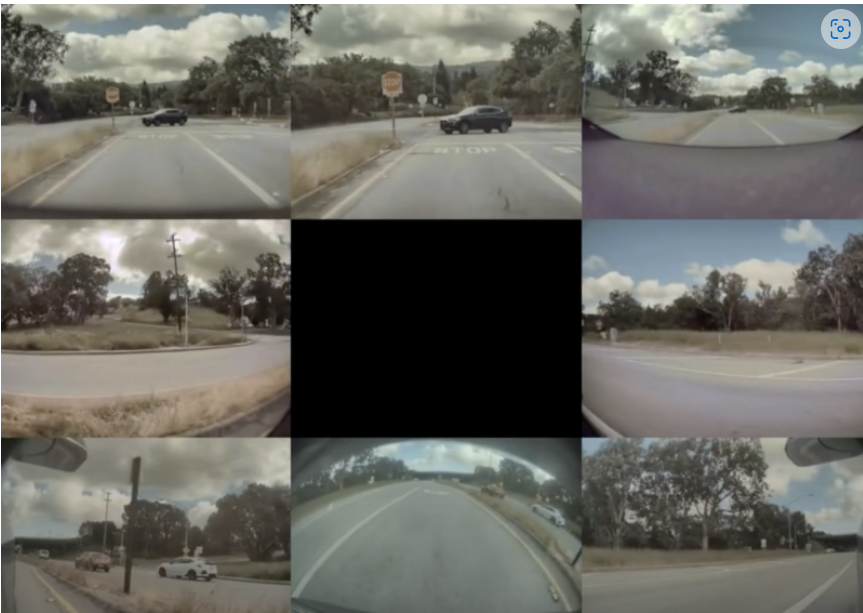
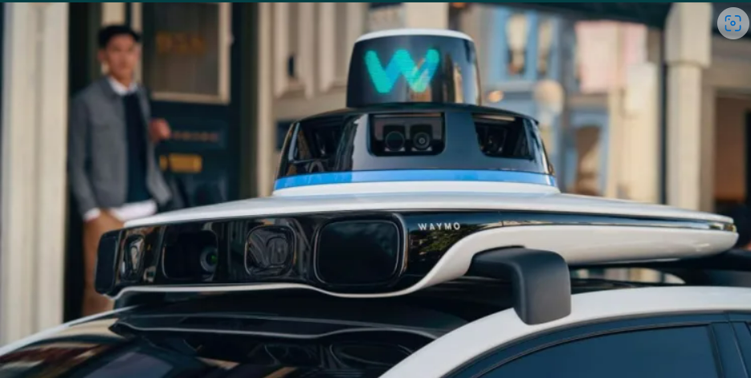
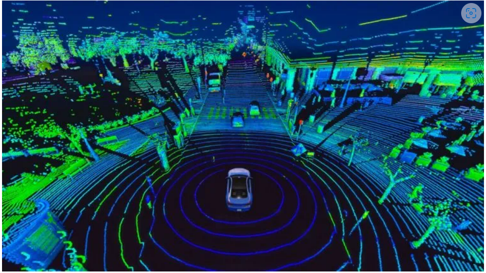

So many top companies working drivrless cars or autonomous tech in cars so that the car can drive without anyone's help and there are 6 levels of autonomous driving
No automation: Only Driver drives the car
Driver assitance: It contains some basic level features like Adaptive cruise control ex:auto cruise in cars
Partial automation: It contains features like lane assist,self parking,driver monitoring but still driver have to drive the car ex:tesla car level 2
Conditional automation: In these vehicles environmental detection and taking decisons based on them to help driver but here also driver intervention is importan ex:audi a8
High automation:In these type vehicles they use some high tech sensors like lidar and radars to detect the surrounding and react here driver is not requried mostly but still an option ex:google waymo projects and arg.ai company cars
Full automation:In this full autonomous driving even no steering for cars totally controlled by itself but still not in practise
A normal consumer can purchase only upto level 2 Advanced driver-assistance systems(ADAS) cars like tesla cars and in india xuv700,mg
Tesla was intending to go full on self driving cars and development is going on and fsd beta was rolling out for testers
This is how tesla cars able to see using it's 8 cameras
Waymo lidar
Lidar mapping it's surroundings
